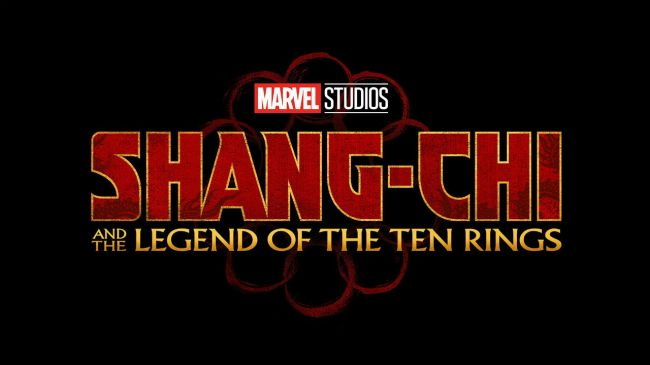

| Character Name | Upcoming Movie | Marvel Charcater page |
|---|---|---|
| Black Widow/ Natasha Romanoff | Black Widow(2020) | Natasha's Page |
| The Eternals | The Eternals(2020) | Eternal's Page |
| Shang Chi | Shang-Chi: And the Legend of the Ten Rings (2021) | Shang-Chi's Page |
| Doctor Strange/Stephen Strange | Doctor Strange in the Multiverse of Madness (2021) | Doctor Strange's Page |
| Scarlett Witch/Wanda Maximoff | Doctor Strange in the Multiverse of Madness(2021) | Wanda's page |
| Thor Odinson | Thor:Love and Thunder | Thor's page |

The Black Widow movie (May 1, 2020)
Directed by Cate Shortland, the confirmed cast includes Scarlett Johansson returning as Natasha Romanoff; Stranger Things’ David Harbour as Alexi; Florence Pugh as Yelena Belova (a “sister figure to Natasha” who takes up the Black Widow mantle in the comics, hint, hint); O-T Fagbenle as Mason, and Rachel Weisz as an unknown character. The Taskmaster will also be in the Black Widow movie.
The Eternals (November 6, 2020)
The Eternals cast includes Richard Madden as Ikaris, Angelina Jolie as Thena, Kumail Nanjiani will be playing Kingo, Salma Hayek (Ajak, the “leader of the Eternals,” according to Feige), Brian Tyree Henry (Phastos, a “genius,” says the actor), Don Lee is the hulking Gilgamesh, while Lia McHugh and The Walking Dead’s Lauren Ridloff rounds out the current confirmed cast, playing Sprite and Makkari respectively.

Shang-Chi: And the Legend of the Ten Rings (February 12, 2021)
Releasing on February 12, 2021, the first Asian-led superhero movie will feature Simu Liu as Shang-Chi, the Master of Kung-Gu and Tony Leung will be playing the real Mandarin and leader of the Ten Rings. Awkwafina will also appear in Shang-Chi in an as-yet-unnamed role.
Doctor Strange in the Multiverse of Madness (May 7, 2021)
Coming on May 7, 2021, Benedict Cumberbatch will be returning at the Sorcerer Supreme and the director of the first Doctor Strange, Scott Derrickson, will also be back behind the camera.
Thor: Love and Thunder (November 6, 2021)
he last current Marvel Phase 4 movie – and probably the most exciting and ‘out there’. Thor: Love and Thunder is coming on November 6, 2021, and will almost definitely shock you with its big reveal: Jane Foster (Natalie Portman) is the new Thor (now officially called Mighty Thor). Just let that sink in for a moment.